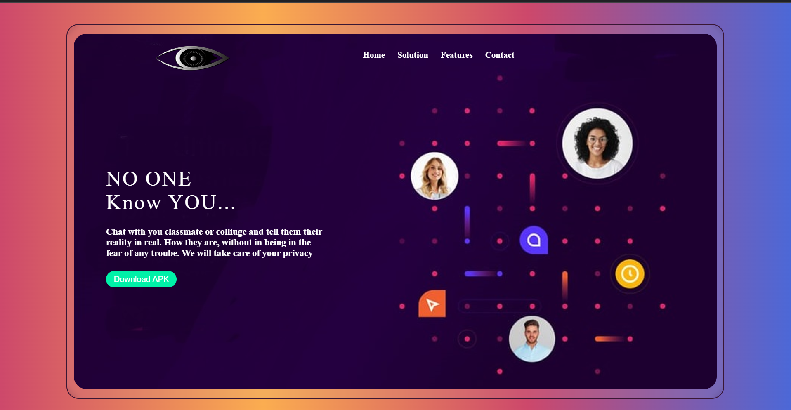

dowry-calculator
View on GitHub →

lafda
View on GitHub →
chat-wrap
View on GitHub →
Api finder
View on GitHub →
unlimited storage
View on GitHub →
insect-game1
View on GitHub →Things i am currently working on
Sanjaveeni medtech
View on GitHub →